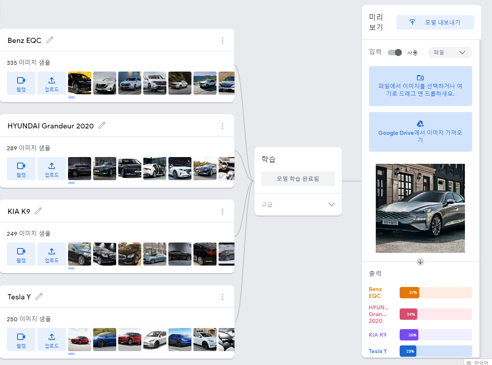
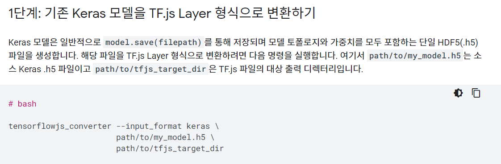

Teachable Machine

처음에는 Teachable Machine으로 모델을 제작해서 웹페이지에 적용할려 했으나 위 사진처럼(간단하게만 학습함) 결과가 너무 많이 않좋아서 Keras를 이용해 모델을 만들기로 결심했다.
참고로 위 사진은 간단하게만 한 것이다. 약 5000번 이상 학습했던 모델도 확인했을 때 성능이 너무나도 낮았다.
VGG16,VGG19

작은 모델을 만들어보고 난 후 큰 모델을 만들고 싶어 VGG16이나 VGG19 모델로 만들어보고 싶었다.
하지만 몇십시간 동안 여러번 테스트하면서 만들었지만 항상 만들고 난 후 이상하게 Loss 값이 낮아져야 하는데 계속 너무 높은 값을 유지해서 포기하고 작은 모델을 몇 백번이나 계속 학습했다.
heroku error python

약 9시간 정도 동안 헤로쿠에 인공지능 모델 웹을 올리고 있는데 이상하게 계속 실패했다.
위에 나오는 오류 때문에 업로드가 안되는 것인데 이 오류 때문에 2번정도 반복하고 3~4시간정도를 이 오류가 차지했다.
이 오류는 너무 허무했다. runtime.txt에 heroku가 설치할 파이썬 버전을 입력하는 곳인데 ' ' 이 2개의 따음 표 때문에 이런 버전은 없다고 계속 했던 것이다.

또 다른 오류로는 위 사진처럼 헤로쿠가 가능한 파이썬 버전이 따로 있는데 내가 가상환경을 만들 때 계속 3.7.12 버전이 없다고 뜨는 것이였다.
그래서 나는 구글을 계속 찾아본 결과 내가 설치하는 패키지 파일이 있는 곳에선 3.7.12 버전이 없고 좀더 자료가 많은 conda-forge에서 3.7.12를 찾을 수 있어 바로 설치했다.
명령어는 conda create -n vehicle_heroku python=3.7.12 -c conda-forge 의외로 간단하다...
conda create -n vehicle_heroku 까지는 가상환경의 이름을 정하고 만든다는 것이고 python=3.7.12 -c conda-forge는 conda-forge에 있는 파이썬 3.7.12 버전을 다운하는 것이다..
Tensorflow.JS

Flask로 돌리다 보니 하나의 웹으로 통합하고 싶어서 Flask를 포기하고 Tensorflow.js를 이용하여 Keras 모델을 변환하고 하나의 웹으로 통합할려 했었다.
하지만 Keras 모델을 js 모델로 변경하긴 했지만 용량이 30Mb가 되어서 분명 모바일에서 한다면 데이터 30Mb를 쓸 것 같아서 많은 데이터 사용 방지를 위해 Flask로 그냥 했다.
사실 JS에서 돌리게 하는 방법을 모르기도 했었다..
힘들다..
다른건 괜찮았는데 웹사이트 만들기만은... 최대한 무에서 유를 창조하는 식으로 만들어보자는 생각 때문에 디자인도 잘 못하면서 만들다보니 너무 힘들었다.
원래 우리 팀은 3명이다.
원래 팀 구성은 정민수, 김석준, 박민성인데 왜인지는 모르겠지만 정민수가 어느 순간 부터 계속 동아리를 빠지게 되면서 (아직 나가진 않음) 2명인 것 같은 3명 팀이 되버린 것이다..
원래 목적은 자동차 판매를 다른 기업을 통해서 판매를 도와주는 목적이였지만 팀이 2명으로 된 탓에 내(박민성)가 거기에서 제안한 자동차 찾는 인공지능을 만들자는 의견을 제시해 이 것만 집중적으로 만들게 되었다.
정민수 빼고 김석준과 박민성은 자동차에 대해서 거의 모른다. (아는 것이라면 자동차는 바퀴가 있어서 굴러간다는 정도?) 김석준과 박민성은 자동차에 대해서 잘 알지도 못한 채 계속 만들게 되서 인공지능을 중점으로 만들게 된 것 같다.
근데 제일 의문인 것은 안온 날 부터 하루도 안빠지고 정민수는 계속 빠졌다. (난 분명 오라고 계속 재촉함 몇백번이고..)
과연 2021/12/22 발표날에는 올까?
적은 날짜 2021/12/21 AM 12:55
근데 분명한건 김석준도 남을 뭐라할 처지는 아니다.
2021/12/22 정민수 왔음 (월요일에 재촉한 것이 도움이 된 것 같다.)
진짜 신기한 건 이것이다.
난 분명 이 모든 것을 하기전에는 (한.. 6월 전?)
파이썬도 아얘 할줄도 몰랐고
인공지능을 만들 줄도 몰랐고
JS를 다뤄본 적도 없고
HTML를 이렇게 많이 다뤄본 적도 없고
가상환경이나 헤로쿠 등등 해본적이 없다..
모든 작업들은 내가 해본적이 없는 작업들 뿐이였다. 내가 주로 하며 제일 잘하는 언어는 분명히 C++이다.